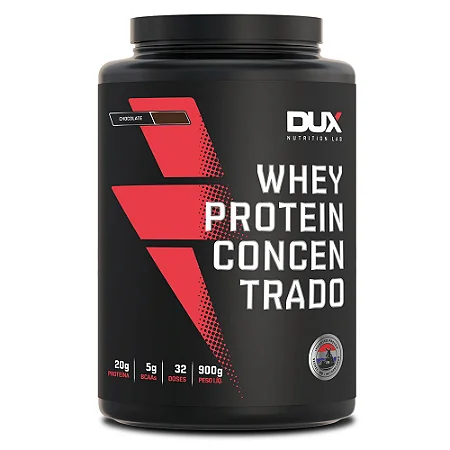
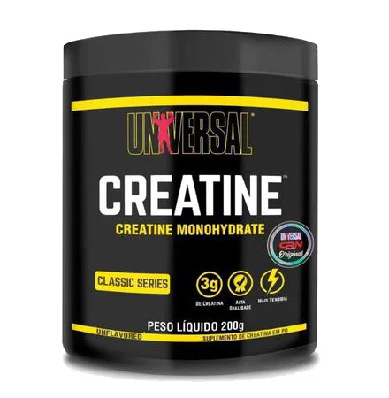
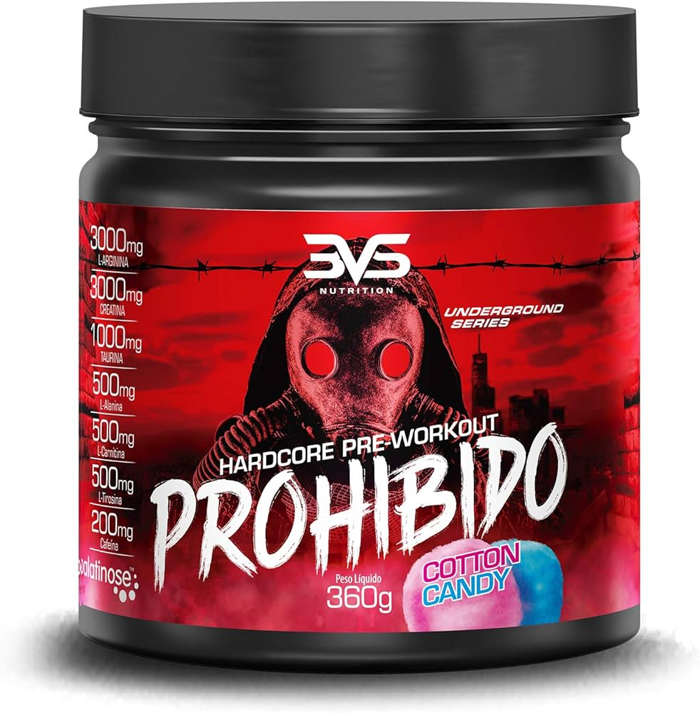

Melhores informações sobre suprimentos
Whey Protein
 Clique aqui para mais informações sobre Whey ProteinWhey Protein é um suplemento proteico popular entre atletas e bodybuilders. Derivado do leite, o whey protein é conhecido por sua rápida absorção e alto valor biológico. É usado para auxiliar na recuperação muscular e no crescimento de massa magra. Existem diferentes tipos, como concentrado, isolado e hidrolisado, cada um com suas características específicas.
Creatina
 Clique aqui para mais informações sobre CreatinaA creatina é um suplemento que ajuda a aumentar a força e a performance em atividades de alta intensidade e curta duração. Encontrada naturalmente em alimentos como carne vermelha, a creatina ajuda a regenerar ATP, a principal fonte de energia para as células musculares durante exercícios intensos. É amplamente utilizada para melhorar o desempenho atlético e a recuperação muscular.
Pré-Treino
 Clique aqui para mais informações sobre Pré-TreinoO pré-treino é um suplemento desenvolvido para aumentar a energia e o foco durante os treinos. Geralmente contém uma combinação de ingredientes como cafeína, beta-alanina, e aminoácidos, que ajudam a melhorar o desempenho, a resistência e a força. É ideal para quem busca otimizar seus treinos e obter melhores resultados na academia.